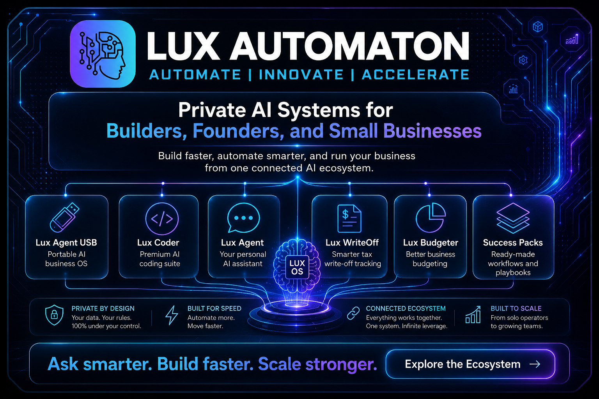

Scattered tools, missed follow-up, unclear operations.

Solutions
Custom AI operating systems for real businesses.
Each solution page should show the customer problem, the system built, the workflow, and the result.
Lux Agent, workflows, dashboards, and automations.
LANA guides users through daily work.
Charts, reports, and usage insights show value.